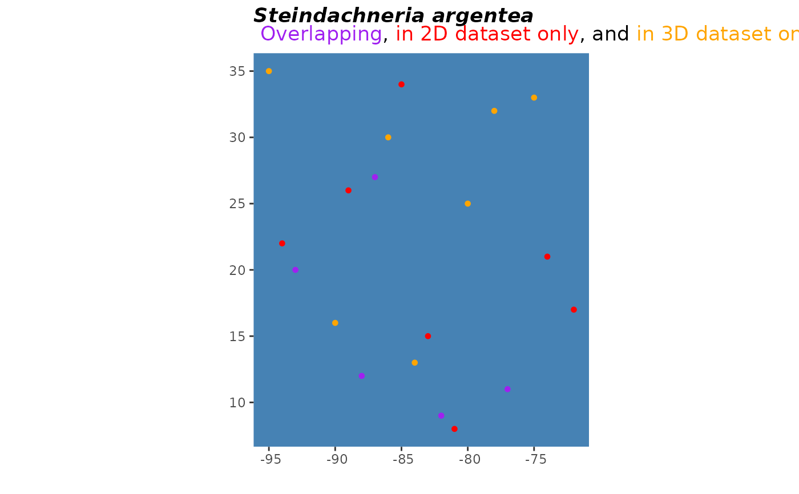

A convenient wrapper around ggplot
to generate formatted plots comparing two sets of
occurrence point plots.
pointCompMap(
occs1,
occs2,
spName,
land = NA,
occs1Col = "#bd0026",
occs2Col = "#fd8d3c",
agreeCol = "black",
occs1Name = "Set 1",
occs2Name = "Set 2",
landCol = "gray",
waterCol = "steelblue",
ptSize = 1,
verbose = TRUE,
...
)A data.frame with at least two columns
named "longitude" and "latitude" or that
can be coerced into this format.
A data.frame with at least two columns
named "longitude" and "latitude" or that
can be coerced into this format.
A character string with the species name to be used in the plot title.
An optional coastline polygon shapefile
of types sf or SpatRaster to provide geographic
context for the occurrence points.
Color for occurrence points on map
Color for occurrence points on map
Color for occurrence points shared
between occs1 and occs2.
An optional name for the first set
of occurrences, which will be color-coded to
occs1Col in the resulting plot.
An optional name for the first set
of occurrences, which will be color-coded to
occs2Col in the resulting plot.
Color for land on map
Color for water on map
numeric value for cex;
size of occurrence points on map.
logical. Switching to FALSE mutes message describing
which columns in occs1 and occs2 are interpreted as x and y coordinates.
Additional optional arguments to pass to
ggplot initial plot object.
A ggplot plot object.
The x and y column names of occs1 and occs2
must match.
set.seed(5)
occs <- data.frame(cbind(decimalLatitude = sample(seq(7,35), 24),
decimalLongitude = sample(seq(-97, -70), 24)))
set.seed(0)
occs1 <- occs[sample(1:nrow(occs),
size = 12, replace = FALSE),]
set.seed(10)
occs2 <- occs[sample(1:nrow(occs),
size = 12, replace = FALSE),]
pointCompMap(occs1 = occs1, occs2 = occs2,
occs1Col = "red", occs2Col = "orange",
agreeCol = "purple",
occs1Name = "2D",
occs2Name = "3D",
waterCol = "steelblue",
spName = "Steindachneria argentea",
ptSize = 2,
verbose = FALSE)
#> Warning: Use of `occ_dat[[occ_datIndices$xIndex]]` is discouraged.
#> ℹ Use `.data[[occ_datIndices$xIndex]]` instead.
#> Warning: Use of `occ_dat[[occ_datIndices$yIndex]]` is discouraged.
#> ℹ Use `.data[[occ_datIndices$yIndex]]` instead.
